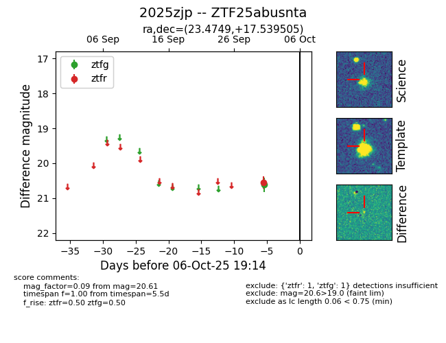

FINK: ZTF25abusnta
Lasair: ZTF25abusnta
ALeRCE: ZTF25abusnta
TNS: 2025zjp
YSE: 2025zjp
ZTF25abusnta (ztf,fink)
2025zjp (tns,yse)
equatorial (ra, dec) = (23.4749,+17.53950)
galactic (l, b) = (137.1048,-44.16059)

last ztfg=20.61, ztfr=20.56
1 ztfg, 1 ztfr detections